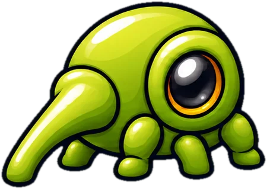

Tap a stage to read its story.
This small green beetle looks like a living clod of earth - its rounded body the same soft jade as new valley moss, and a wide single eye that blinks with a muddy yellow glow. Its stout trunk-like snout pokes at every patch of soil it crosses, sniffing for song-seeds buried by Verdant Valley's song-trees. It is a gentle digger; it never tears roots, only loosens soil with a patient nudge and pushes the seeds back deeper for the trees to find later.
Field note: Scaralite's trunk-snout can detect a buried seed through fifteen centimetres of packed valley earth.
Verdant Valley. Scaralite and its family are found in the Verdant Valley. See everyone who lives there.
Share a Bond Food that matches its types to become friends. Scaralite loves:
A Bond Food is not a trick. It joins your spirit with the Kimuro's spirit, and only when it chooses you.
Print the Kimuro adventure packs: mazes, cards, a board game and Bond Mark medals.
See the printable packs